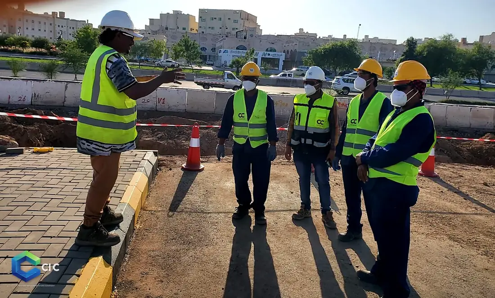
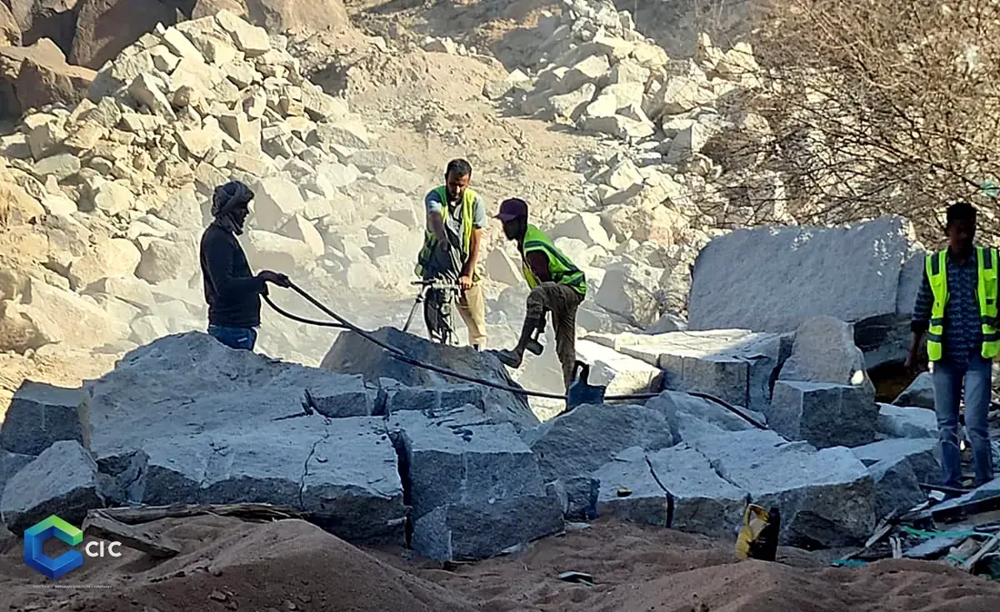
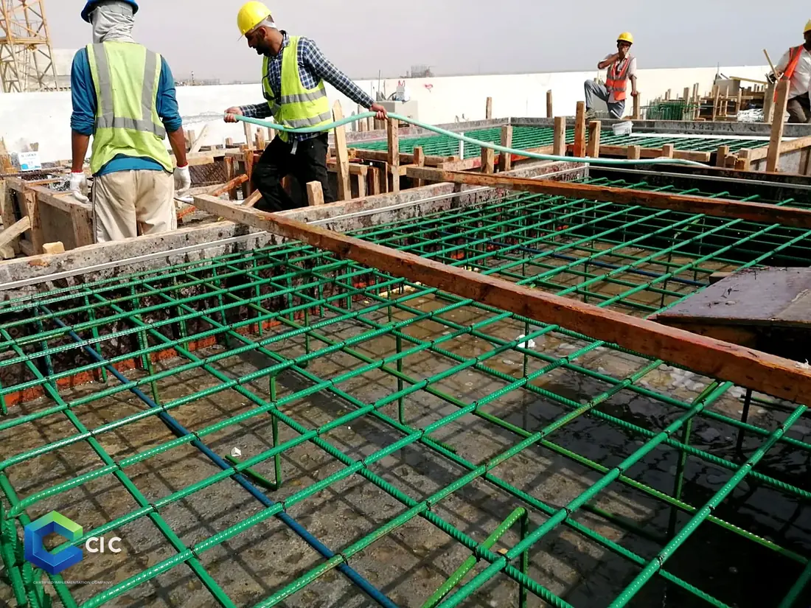

2025
2025سڑکیں و انفراسٹرکچر
02 · عمومی کنٹریکٹنگ · سعودی عرب کے تمام علاقے
شہر کی خدمت کرنے والی سڑکیں۔
مملکت بھر میں سڑکوں اور انفراسٹرکچر کا عملی تجربہ: سڑک کی ہمواری، سیلابی پانی کی نکاسی کے نیٹ ورک، فٹ پاتھ اور کرب، اور زیرِ زمین یوٹیلیٹیز۔
2025
2024
2024
2017ہم سائٹ دیکھتے ہیں، ضروریات سنتے ہیں اور نقشوں کا جائزہ لیتے ہیں۔
آئٹمز، مقدار اور مدت کے ساتھ واضح پیشکش۔
براہِ راست انجینئرنگ نگرانی اور تصویری رپورٹس۔
معیار کے مطابق حوالگی اور بعد میں فالو اپ۔
شاہ عبداللہ روڈ کی اپ گریڈیشن، پرنس نایف روڈ کی تکمیل اور شاہ سلمان روڈ واک وے۔
جی ہاں، جازان پورٹ میں آرامکو معیار کے مطابق کام کیا۔
واٹس ایپ +966 53 452 5202 پر منصوبے کی قسم، مقام اور رقبہ بھیجیں۔ ہم معائنہ کر کے تفصیلی پیشکش بھیجیں گے۔
عمومی کنٹریکٹنگ · سعودی عرب کے تمام علاقے
آج ہمیں بتائیں، ہم جلد سائٹ وزٹ اور واضح پیشکش کا انتظام کریں گے۔